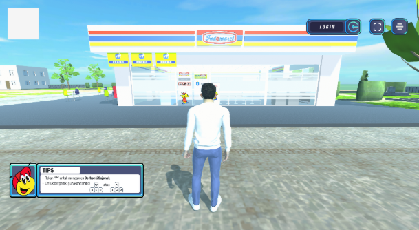

01 · Unity 3D
Dunia Virtual Indomaret
Interactive virtual environment built for an immersive retail experience.
Software Engineer · Creative Technologist · Essay Writer
I’m Rizki, an IT professional and essay writer who builds interactive digital systems while exploring ideas through philosophical writing, thought essays, and journaling.
My work moves between structured engineering and reflective writing: from Unity 3D, Java web applications, and computer vision systems, to essays that question everyday life, meaning, and the way we think.
I’m Rizki Firdaus, an IT professional with a strong focus on building scalable systems, interactive digital experiences, and practical software solutions.
My journey started from a non-linear path—learning multiple technologies from scratch and rapidly adapting to real-world demands. Over time, I’ve developed experience in Java-based web applications, Unity 3D development, computer vision, and cross-platform solutions.
I have hands-on experience in designing and developing virtual environments, implementing system integrations, and building applications that prioritize both performance and usability. My approach is structured, clean, and focused on long-term maintainability.
Beyond development, I’m also a writer. I write philosophical essays, thought essays, and personal journaling pieces on Medium and Jakarta Philosophy. Writing helps me turn reflection, doubt, and everyday observations into ideas that feel more honest and human.
Java, C#, Dart, Python, C, Unity Development, Flutter Development, MVC Architecture.
Unity Engine, Flutter, OpenCV, TensorFlow, NVIDIA Jetson Nano, Ubuntu environment.
Clean architecture, modular design, OOP, API integration, cross-platform development, system design.
System testing, integration testing, debugging, troubleshooting, performance optimization, documentation.
Philosophical essays, thought essays, journaling, reflective writing, storytelling, and idea development.
I actively write philosophical essays, thought essays, and journaling pieces on Medium. My writing explores personal reflection, everyday life, authenticity, anxiety, meaning, and the quiet questions people often carry but rarely say out loud.
For me, writing is not only content creation. It is a thinking practice: a way to organize scattered thoughts, challenge assumptions, and turn ordinary experiences into something more meaningful and relatable.
I also publish reflective pieces through Jakarta Philosophy as part of my writing portfolio and personal branding as a thinker, writer, and creative technologist.
Read my Medium ↗Say Hello